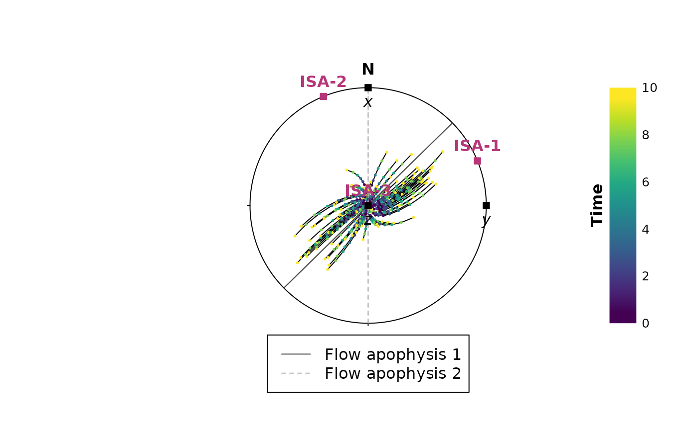
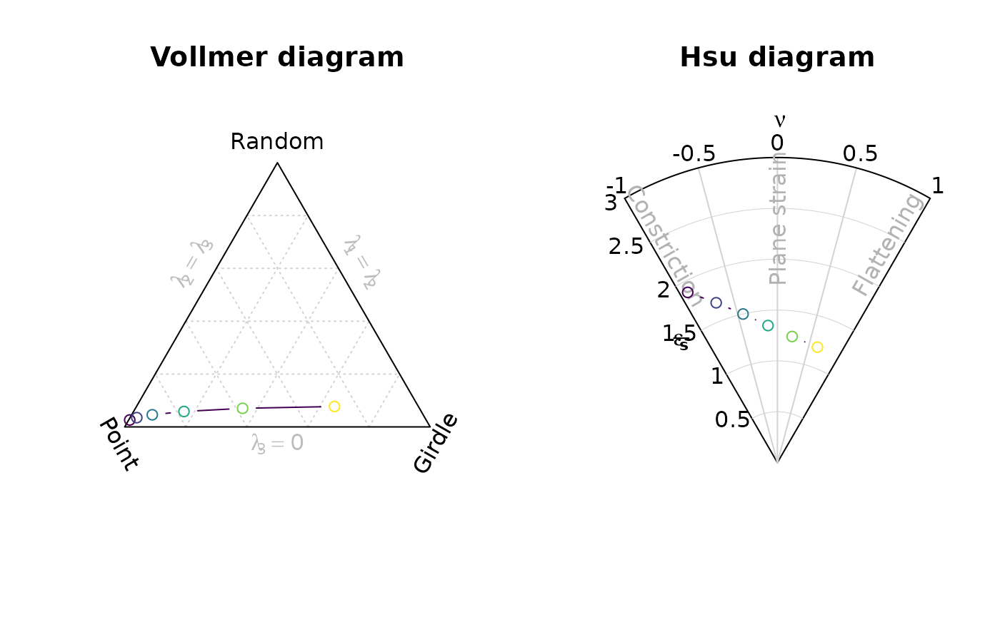

Deformation and Velocity Gradient Tensor
Tobias Stephan
2025-11-05
Source:vignettes/deformation.Rmd
deformation.RmdThis tutorial demonstrates how {structr} can be used to deform orientation data using deformation and velocity gradient tensors. This can be useful to simulate progressive deformation and change of orientation.
Deformation gradient tensor
3D deformation gradient tensor is a matrix that linearly transforms points. In other words it describes the changes of points in three dimensions.
Define a deformation gradient tensor
The deformation matrix can be defined using several ways:
-
defgrad_by_compcreates an defined by individual components (default is identity tensor) -
defgrad_by_ratio()creates an isochoric tensor with axial stretches defined by strain ratios (default is identity tensor). -
defgrad_from_vectors()creates tensor representing rotation around the axis perpendicular to both vectors and rotatev1tov2. -
defgrad_from_axisanglecreates tensor representing a rigid-body rotation about an axis and an angle. -
defgrad_from_pureshearcreates an isochoric coaxial tensor. -
defgrad_from_simpleshearcreates an isochoric non-coaxial tensor. -
defgrad_from_generalshearcreates an isochoric tensor, where transtension is and , and transpression is and (1) -
defgrad_from_dilationcreates tensor representing the volume change in z-direction.
D1 <- defgrad_from_generalshear(k = 2.5, gamma = 0.9)
print(D1)
#> Deformation gradient tensor
#> [,1] [,2] [,3]
#> [1,] 1 1.473332 0.0
#> [2,] 0 2.500000 0.0
#> [3,] 0 0.000000 0.4Matrix algebra
An isochoric deformation tensor creates deformation without
volume change. In that case, the determinant of the matrix must be 1. In
R, this can be checked using det():
det(D1)
#> [1] 1The inverse of the tensor reverses the deformation. In R,
this can be done using solve():
solve(D1)
#> [,1] [,2] [,3]
#> [1,] 1 -0.5893326 0.0
#> [2,] 0 0.4000000 0.0
#> [3,] 0 0.0000000 2.5The eigenvectors of the tensor describe the orientation of the strain ellipse, and the eigenvalues describe its shape (i.e. length of the principal axes is proportional to the amount of stretch).
eigen(D1)
#> eigen() decomposition
#> $values
#> [1] 2.5 1.0 0.4
#>
#> $vectors
#> [,1] [,2] [,3]
#> [1,] 0.7007364 1 0
#> [2,] 0.7134203 0 0
#> [3,] 0.0000000 0 1Deformation tensors can be combined using matrix multiplication. The resulting deformation from our general-shear deformation (D1) superimposed by our rotation (D2) is
D2 <- defgrad_from_axisangle(Line(0, 90), 30)
D12 <- D2 %*% D1 # D1 is applied firstMatrix multiplication is not commutative, i.e.
Transformation using deformation gradient tensor
The deformation can now be applied on some orientation data using linear transformation:
# generate some random lineation
l <- rvmf(100, mu = Line(0, 90), k= 100)
l_transformed <- transform_linear(l, D1)
head(l_transformed)
#> Vector (Vec3) object (n = 6):
#> x y z
#> [1,] -0.10284016 0.04850097 0.3964546
#> [2,] 0.13775532 0.31523476 0.3963421
#> [3,] 0.04318670 0.24232166 0.3961172
#> [4,] -0.12970895 -0.33532970 0.3954535
#> [5,] -0.23446654 -0.31984836 0.3962864
#> [6,] -0.08260559 0.09628880 0.3957975Velocity gradient tensor
The velocity gradient tensor L describes the velocity of particles at any instant during the deformation. Velocity gradient tensor from deformation gradient tensor.
- The
timeargument specifies the time of deformation, i.e. how many times the Deformation gradient tensor should be applied.
L <- velgrad(D1, time = 10)Decomposition
The velocity gradient tensor L can be decomposed into a symmetric matrix S (the rate or stretching tensor) and the skew-symmetric matrix W (the spin or vorticity tensor).
The stretching matrix (or tensor) and describes the portion of the deformation that over time produces strain:
S <- velgrad_rate(L)The vorticity or spin matrix (tensor) and contains information about the internal rotation during the deformation:
W <- velgrad_spin(L)The eigenvectors of the stretching gradient tensor give the orientations and lengths of the instantaneous stretching axes:
eigen(S)
#> eigen() decomposition
#> $values
#> [1] 0.11003269 -0.01840362 -0.09162907
#>
#> $vectors
#> [,1] [,2] [,3]
#> [1,] 0.3785365 0.9255864 0
#> [2,] 0.9255864 -0.3785365 0
#> [3,] 0.0000000 0.0000000 1The eigenvectors of the spin gradient tensor describe the flow apophyses:
eigen(W)
#> eigen() decomposition
#> $values
#> [1] 0+0.045i 0-0.045i 0+0.000i
#>
#> $vectors
#> [,1] [,2] [,3]
#> [1,] 0.7071068+0.0000000i 0.7071068+0.0000000i 0+0i
#> [2,] 0.0000000+0.7071068i 0.0000000-0.7071068i 0+0i
#> [3,] 0.0000000+0.0000000i 0.0000000+0.0000000i 1+0iStrain increments
Now we can extract the deformation gradient tensor accumulated after
a given time. Here we extract the deformation gradient tensors for some
time steps using defgrad()
- The
stepsargument specifies how many increments you would like to extract (this is also is the “resolution” of the deformation path) - The
time
D1_steps <- defgrad(L, time = 10, steps = 2)Now apply the deformation tensors on some orientation data
l_steps <- lapply(D1_steps, function(i){transform_linear(l, i)})Visualization of deformation over time
And plot the paths showing how the orientations change over time
axes <- Vec3(c(1, 0, 0), c(0, 1, 0), c(0, 0, 1))
increments <- seq(0, 10, 2)
par(xpd = NA)
stereo_path(l_steps, type = "l", add = FALSE)
stereo_path(l_steps, type = "p", col = assign_col(increments), pch = 16, cex = .4)
points(axes, pch = 15); text(axes, labels = c('x', 'y', 'z'), pos = 1)
legend_c(increments, title = "Time")
We can also monitor how the orientation tensor changes during progressive deformation:
par(mfrow = c(1, 2))
vollmer_plot(l_steps, type = 'b', col = assign_col(increments))
hsu_plot(l_steps, type = 'b', col = assign_col(increments))
References
Fossen, H., & Tikoff, B. (1993). The deformation matrix for simultaneous simple shearing, pure shearing and volume change, and its application to transpression-transtension tectonics. Journal of Structural Geology, 15(3–5), 413–422. https://doi.org/10.1016/0191-8141(93)90137-Y
Sanderson, D. J., & Marchini, W. R. D. (1984). Transpression. Journal of Structural Geology, 6(5), 449–458. https://doi.org/10.1016/0191-8141(84)90058-0